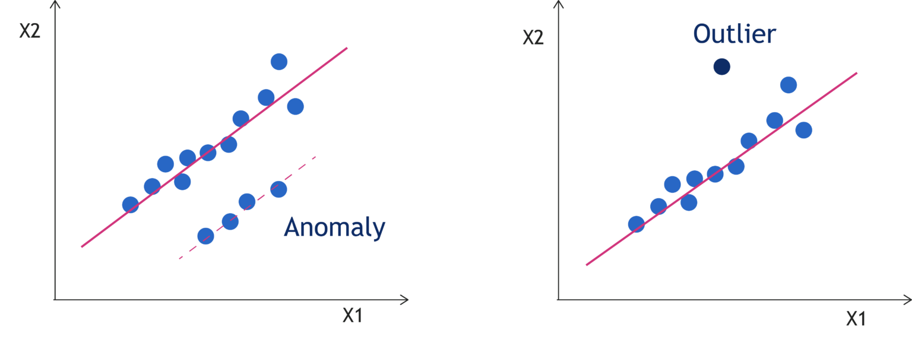
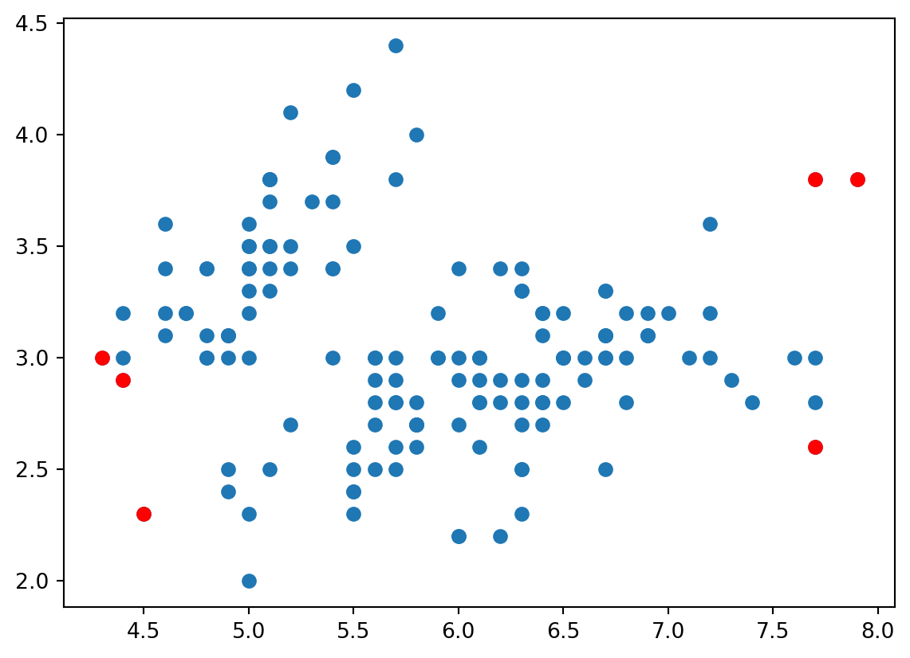

In Machine Learning field, Anomaly detection and Outlier Detection are used during the Data Understanding and Data Pre-processing stages. They are used in wide range of field such as credit card, insurance, or even in military field.
Anomaly Detection
Anomalies are reffered as the data points that do not conforrm to an expected pattern of other data points. So, the anomalies can be defined as weird data points comparing with the others.
Anomalies might be occured for a various reasons such as malicious activity, cyber-intrusion, or breakdown of system. Since they occur not in common situation, it would be pretty interesting to analyse anomalies point.
Therefore, Anomaly detection refers to the way of finding patterns in data that contains such anomalies.
Outlier Detection
Outlier is a rare chance of occurrence within the dataset. The Outlier is an observation point that is far from the others. It may indicate experimental error in the dataset. Outlier should be the most extream point like minimum or maximum, or both of them.
Therefore, Outlier detection refers to the way of finding a data that is far from the others.
Anomaly vs Outlier

detection.png
As seen above, Anomalies are treated as pattern although Outlier is only a data point.
Anomaly / Outlier Detection in Support Vector Machine
The Support Vector Machine (SVM) is a supervised machine learning used in classification. SVM trains the dataset with two categories. An algorithm of SVM assigns a new input into one of these categories.
Since SVM model check the range of each category, anomalies can be determined by checking the points outside of the range.
Importing the libraries and dataset
import numpy as npimport pandas as pddata = pd.read_csv("../dataset/iris.csv")df = data[["sepal_length", "sepal_width"]]print(df.describe())
sepal_length sepal_width
count 150.000000 150.000000
mean 5.843333 3.054000
std 0.828066 0.433594
min 4.300000 2.000000
25% 5.100000 2.800000
50% 5.800000 3.000000
75% 6.400000 3.300000
max 7.900000 4.400000
Training and Predict model
from sklearn.svm import OneClassSVMmodel = OneClassSVM(kernel='rbf', gamma=0.001, nu=0.05).fit(df)y_pred = model.predict(df)
Here, parameter ‘nu’ in OneClassSVM refers the estimated proportion of outliers in this data. So, in this dataset, we predict 5% of the data gonna be anomalies.
import matplotlib.pyplot as pltplt.scatter(df["sepal_length"], df["sepal_width"])plt.scatter(anomalies["sepal_length"], anomalies["sepal_width"], c="r")
<matplotlib.collections.PathCollection at 0x208dcc18ac0>

Here. the red dots among the blue dots represent anomalies in this dataset. Since we predict 5% of dataset into anomalies, only 5 data points seems to be red.